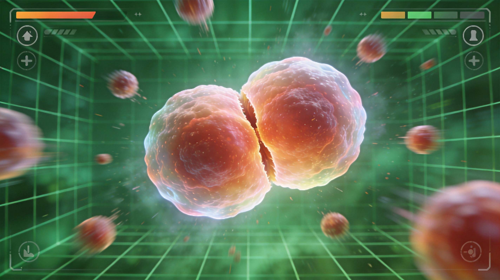

Introduction
Agma.io is a browser‑based multiplayer arena where players control microscopic cells or organisms in a constantly evolving ecosystem. Unlike classic .io games, Agma emphasizes strategic growth, custom skins and wearables, and a rich set of power‑ups that let you boost, shield, or even camouflage your cell. The game offers several modes—Free‑For‑All, Team, Battle Royale, and Survival—each with its own map layout and objective. Players must consume food particles, absorb smaller cells, and avoid larger predators while managing mass to stay fast and agile. The dynamic leaderboard, real‑time chat, and frequent updates keep the community active and competitive. Whether you prefer a cautious collector or an aggressive hunter, Agma.io provides a polished, fast‑paced experience that rewards both reflexes and planning.
Getting Started

Getting started on Agma.io is simple. Open https://agma.io in any modern browser, choose a server nearest to you, and click "Play". You’ll spawn as a tiny cell in the chosen mode—Free‑For‑All, Team, or Battle Royale. Use your mouse to steer; the cell follows the cursor automatically. Press Space to boost, which consumes a portion of your mass but gives a burst of speed. Left‑click (or tap on mobile) to split your cell into two smaller cells, useful for escaping a predator or capturing food quickly. Press E to eject a small mass pellet that can be used as bait or to block opponents. The HUD shows your current mass, the leaderboard, and a mini‑map. Gather the colorful food particles scattered across the map; each particle adds a small amount of mass. Avoid cells larger than yours—they can swallow you in one bite. As you grow, you can use the "Merge" button to rejoin split cells, regaining a larger, faster single cell. Experiment with the controls in a low‑traffic server first to get comfortable before jumping into competitive matches.
Basic Tips
Basic Tips for New Players 1. Stay close to food clusters: Food particles respawn faster in high‑density areas. By staying near a cluster you can accumulate mass without constantly chasing scattered bits, which also keeps you visible to allies in team mode. 2. Use boost sparingly: Boosting drains a chunk of your mass and slows you briefly after the burst. Save it for escaping a larger opponent or reaching a distant food source that would otherwise be unreachable. 3. Split only when necessary: Splitting creates multiple smaller cells that can be individually eaten by predators. If you’re not in immediate danger, keep a single larger cell to maintain speed and maneuverability. 4. Keep an eye on the leaderboard: The top players often have massive cells. Note their positions on the mini‑map and avoid their routes unless you have a size advantage or a plan to outmaneuver them. 5. Use the mini‑map wisely: The mini‑map shows recent food spawns, virus eruptions, and opponent movements. React quickly to changes—moving away from a virus that’s about to explode can save you from a sudden mass loss. Practice these habits in a relaxed server, then apply them in competitive matches for better survival odds.
Advanced Strategies
Advanced Strategies 1. Prediction and fake‑outs: Experienced players watch an opponent’s movement patterns and predict where they will be. By faking a move in one direction and then boosting opposite, you can bait larger cells into overextending and snap back to safety. 2. Zone control: In team modes, controlling key food clusters or virus nests can starve the opposing team. Position your largest cell near a virus so you can trigger it on command, launching projectiles that split enemies or clear a path for teammates. 3. Mass‑split timing: Time your split so newly created cells stay just under the predator’s ingestion threshold, letting you scatter and regroup quickly. Works best with a 10–15% size advantage, merging back in seconds. 4. Using wearables strategically: Wearables such as "Stealth Cloak" temporarily hide your mass from the leaderboard, making opponents underestimate you. Pair this with a sudden boost to catch them off‑guard. 5. Balancing speed vs. mass: Larger cells are slower but have more inertia. Keep your mass in a sweet spot—around 1,500–2,000 units—so you retain decent acceleration while still being able to consume medium‑sized opponents. Master these tactics to climb the leaderboard and dominate competitive matches.
Pro Tips
Pro Tips 1. Master mass‑split patterns: Chain split, boost, and re‑merge in one fluid motion to create "mass waves" that swallow multiple opponents before they react. Practice until the motion feels automatic. 2. Predict boost timing: Most players boost after spotting food or after a split. Use that moment to ambush; place yourself so their boost lands them in your ingestion radius. 3. Optimal size: Keep mass just under the speed drop threshold (≈2,500 units). This stays agile while still able to eat medium cells. 4. Wearables for deception: "Smoke Screen" hides your trail, making opponents mispredict your path. Pair with sudden direction changes to outmaneuver larger foes. 5. Review replays: Watch top‑player replays to spot habits, escape routes, and food‑cluster patterns. Adjust accordingly.
Conclusion
Conclusion Agma.io blends fast‑paced arcade action with deep strategic growth, offering a vibrant community and endless replayability. By mastering the basics—collecting food, using boost and split wisely—and gradually incorporating advanced tactics like prediction, zone control, and wearable tricks, any player can climb the leaderboard. Jump into a server today, experiment with skins and wearables, and see how far your cell can go. The arena awaits—good luck and have fun!